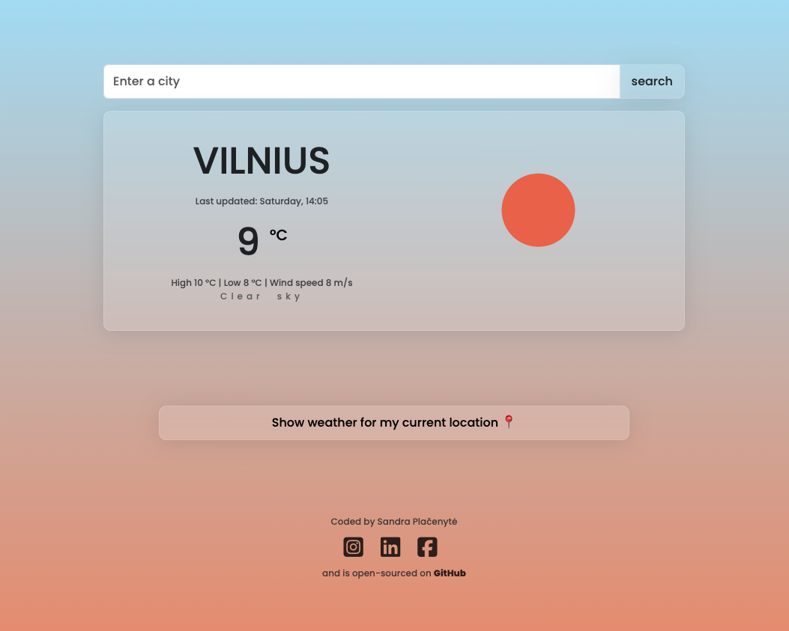

My projects
Take a look on what I've been working on...
Oslo Afro Arts Festival Website
I designed and developed the official website for Oslo Afro Arts, a
vibrant cultural organization celebrating African art, music, and
creativity in Norway. The site features a modern, responsive design
with intuitive navigation, dynamic event updates, and strong visual
storytelling. Built with HTML, CSS, and Java Script, it offers an
engaging user experience while highlighting the rich diversity of
Afro arts in Oslo.

Cat themed t-shirt shop
Cat Tee is my own e-commerce project, created out of a love for cats
and cozy, stylish apparel. I designed and built the online store via
shopify to offer a fun and playful shopping experience, featuring
original cat-themed t-shirts and accessories. The website is fully
responsive, easy to navigate, and integrates secure checkout
options. From the branding to the user interface, every detail was
crafted to bring a little extra joy to fellow cat lovers around the
world.

Dictionary application
Dictionary app that was built with React.js, HTML, CSS, JavaScript.
The code is open-sourced on GitHub and the page is hosted on
Netlify. The application integrates several various API to retrieve
information from several diffrent sources: SheCodes API for pexels
image gallery and Free Dictionary API. In this application you can
search any English language word and the application is capable of
showing you an audio file for pronunciation of the word, word
phonetics, lots of different meanings, synonyms, examples in the
sentence and also a photo gallery related to this word.

Vilnius landing page
A landing page about the capital of Lithuania, Vilnius was built
using HTML, CSS. The code is open-sourced on GitHub and the page is
hosted on Netlify. The page informs the user about Vilnius, tells an
old legend and also offers several places to visit (embedded maps,
Instagram pictures) as well as provides infrastructure related
links.

Weather application
A real time weather app was built using HTML, CSS, JavaScript (later
I also rebuilt it using reqact.js). The code is open-sourced on
GitHub and the application is hosted on Netlify. The application
integrates an API from Open weather map. In the application you can
search for any city in the world and the application will show you
current weather for that city, including high and low temperature,
wind speed and a nice icon that describes the current weather. Also
you will get a prognose for the next 6 days with temperature high
and low, including a describing icon for the weather conditions.
I’ve also built a nice extra function with Geolocation API that will
allow the user to click on the button for the current location
weather.

World clock application
World clock application was built using HTML, CSS, JavaScript. It
allows the user to see the time in different cities around the world
that are in different time zones. The cities can be selected in a
drop down menu. One of the selections also allows the user to see
the time in their current location.